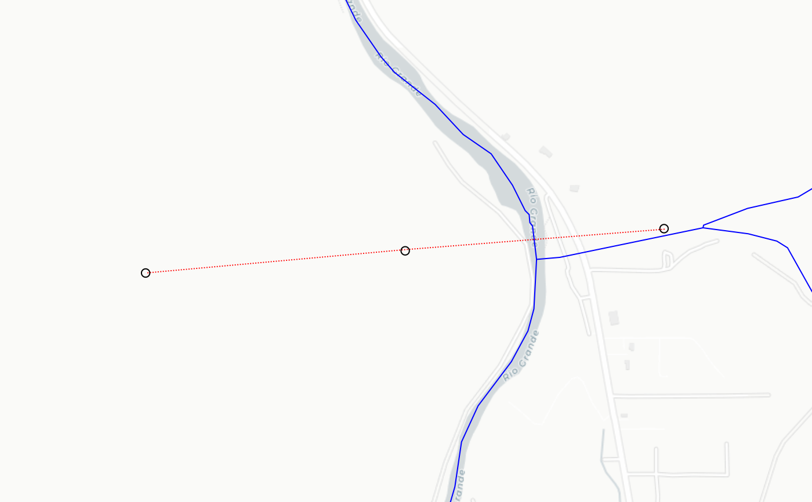
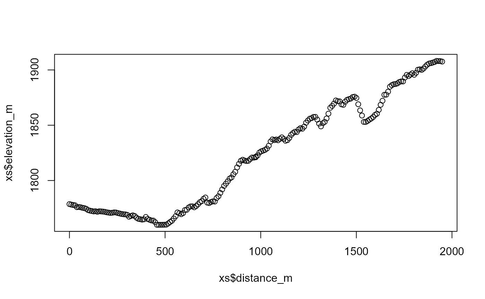

Uses a cross section retrieval web services to retrieve elevation along a path.
get_elev_along_path(points, num_pts, res = 1, status = TRUE)sf data.frame containing a point column.
numeric number of points to retrieve along the cross section.
integer resolution of 3D Elevation Program data to request. Must be on of: 1, 3, 5, 10, 30, 60.
logical
sf data.frame containing points retrieved. Names include "id", "distance_m", "elevation_m", "spatial_ref", "geometry", and ".group". .group tracks which input point each set of output points belongs to.
# \donttest{
point1 <- sf::st_sfc(sf::st_point(x = c(-105.9667, 36.17602)), crs = 4326)
point2 <- sf::st_sfc(sf::st_point(x = c(-105.97768, 36.17526)), crs = 4326)
point3 <- sf::st_sfc(sf::st_point(x = c(-105.98869, 36.17450)), crs = 4326)
points <- sf::st_as_sf(c(point1, point2, point3))
(xs <- get_elev_along_path(points, 100))
#> Requestion segment 1 of 2
#> Requestion segment 2 of 2
#> Simple feature collection with 202 features and 5 fields
#> Geometry type: POINT
#> Dimension: XY
#> Bounding box: xmin: -105.9886 ymin: 36.17451 xmax: -105.9667 ymax: 36.176
#> Geodetic CRS: WGS 84
#> # A tibble: 202 × 6
#> id spatial_ref elevation_m distance_m geometry .group
#> * <chr> <int> <dbl> <dbl> <POINT [°]> <int>
#> 1 0 0 1779. 0 (-105.9667 36.176) 1
#> 2 1 0 1778. 9.74 (-105.9668 36.17599) 1
#> 3 2 0 1778. 19.5 (-105.9669 36.17599) 1
#> 4 3 0 1778. 29.2 (-105.967 36.17598) 1
#> 5 4 0 1776. 39.0 (-105.9671 36.17597) 1
#> 6 5 0 1776. 48.7 (-105.9672 36.17597) 1
#> 7 6 0 1776. 58.4 (-105.9674 36.17596) 1
#> 8 7 0 1775. 68.2 (-105.9675 36.17595) 1
#> 9 8 0 1775. 77.9 (-105.9676 36.17594) 1
#> 10 9 0 1774. 87.6 (-105.9677 36.17594) 1
#> # ℹ 192 more rows
if(inherits(xs, "sf")) {
bbox <- sf::st_bbox(xs) + c(-0.005, -0.005, 0.005, 0.005)
nhdplusTools::plot_nhdplus(bbox = bbox, cache_data = FALSE)
plot(sf::st_transform(sf::st_geometry(xs), 3857), pch = ".", add = TRUE, col = "red")
plot(sf::st_transform(sf::st_sfc(point1, crs = 4326), 3857), add = TRUE)
plot(sf::st_transform(sf::st_sfc(point2, crs = 4326), 3857), add = TRUE)
plot(sf::st_transform(sf::st_sfc(point3, crs = 4326), 3857), add = TRUE)
plot(xs$distance_m, xs$elevation_m)
}
#> Zoom set to: 12


# }